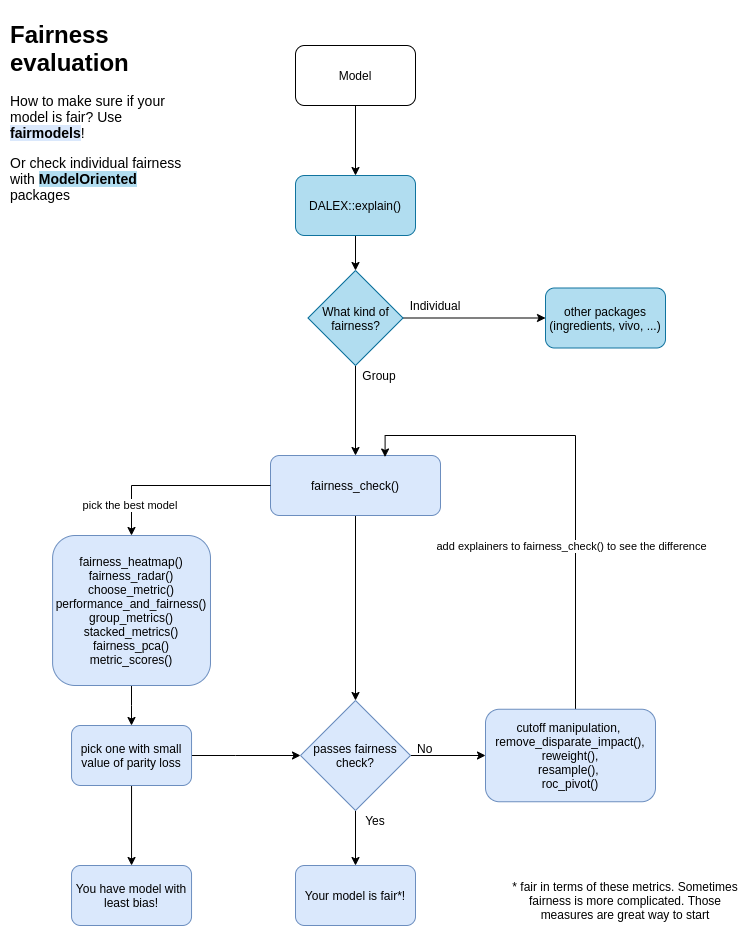
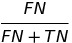

Overview
fairmodels is package for fairness audit and visualization. Uses models explained with DALEX and calculates fairness metrics based on confusion matrix for protected group. Allows to compare and gain information about various machine learning models. Make sure your models are classifying protected groups similarly.
Example
Checking fairness is easy!
library(fairmodels)
library(ranger)
library(DALEX)
data("german")
# ------------ step 1 - create model(s) -----------------
lm_model <- glm(Risk~.,
data = german,
family=binomial(link="logit"))
rf_model <- ranger(Risk ~.,
data = german,
probability = TRUE,
num.trees = 200)
# ------------ step 2 - create explainer(s) ------------
# numeric y for explain function
y_numeric <- as.numeric(german$Risk) -1
explainer_lm <- explain(lm_model, data = german[,-1], y = y_numeric)
explainer_rf <- explain(rf_model, data = german[,-1], y = y_numeric)
# ------------ step 3 - fairness check -----------------
fobject <- fairness_check(explainer_lm, explainer_rf,
protected = german$Sex,
privileged = "male")
print(fobject)
plot(fobject)
Compas recidivism data use case Tutorial
How to evaluate fairness?

Fairness checking is flexible
fairness_check parameters are
- x, … -
explainersandfairness_objects(products of fairness_check).
- protected - factor with different subgroups as levels. Usually specific race, sex etc…
- privileged - subgroup, base on which to calculate parity loss metrics.
- cutoff - custom cutoff, might be single value - cutoff same for all subgroups or vector - for each subgroup individually. Affecting only explainers.
- label - character vector for every explainer.
Models might be trained on different data, even without protected variable. May have different cutoffs which gives different values of metrics. fairness_check() is place where explainers and fairness_objects are checked for copmatibility and then glued together.
So it is possible to to something like this:
fairness_object <- fairness_check(explainer1, explainer2, ...)
fairness_object <- fairness_check(explainer3, explainer4, fairness_object, ...)even with more fairness_objects!
If one is even more keen to know how fairmodels works and what are relations between objects, please look at this diagram class diagram
{kind=link}
Metrics used
There are 13 metrics based on confusion matrix :
| Metric | Formula | Full name | Other names |
|---|---|---|---|
| TPR |  |
true positive rate | equal opportunity, sensitivity, recall |
| TNR |  |
true negative rate | specificity |
| PPV |  |
positive predictive value | predictive parity, precision |
| NPV |  |
negative predictive value | |
| FNR |  |
false negative rate | |
| FPR |  |
false positive rate | predictive equality |
| FDR |  |
false discovery rate | |
| FOR |  | false omision rate | |
| TS |  |
threat score | |
| STP |  |
statistical parity | |
| ACC |  |
accuracy | |
| F1 |  |
F1 score | |
| MCC |  |
Matthews correlation coefficient |
and their parity loss
how parity loss is calculated?

Where  denote the membership to unique subgroup from protected variable
denote the membership to unique subgroup from protected variable
some fairness metrics like Equalized odds are satisfied if parity loss in both TPR and FPR is low